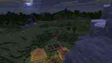

The janm.ml Minecraft Server
Info
The janm.ml Minecraft Server is a vanilla-like survival 1.15.2 Minecraft server running on Spigot with only some minor modifications.
It will be updated to every new Minecraft version, once every piece of software the server uses has been updated and it was tested on the most recent backup of the server world to not break anything (changes in game mechanics notwithstanding).
The server will also be backed up often as well as sometimes go down for maintenance. During this time you will not be able to play. You can check the status of the server and see if there is a maintenance window planned or if something went wrong below. Don't worry, if there is a problem, I probably already know about it and am either working on it, or not available. Spamming messages will only slow down server maintenance work.
The server is not open to everyone (it uses the normal whitelist system), but you can get on that whitelist and start playing on the server by registering below.
Other random info:
The seed for the server world is -3122104141486301182.
That seed was chosen out of 10 candidates, wich were randomly picked in-game.
The difficulty is locked at "hard".
Those images above were not taken on the server.
This server uses a mix of custom plugins and VanillaTweaks.
Server Status
Here you can check the status of the server and see if there is any maintenance planned.
Status:
Checking status...
Checking players...
Checking server speed...
next planned maintenance:
Checking our calender...
Server Rules
Definitions:
- "The Admins" are the people running the server. They make and enforce the rules.
- The "Spawn Area" is the area within a few hundred blocks of the center of the world (coordinates 0, 0).
- The "Players" are the players playing on the server.
- A "building" is any building, house, structure or similar, built or in any other way made or modified by players.
Rules:
1. The server is strictly survival, so you will not be getting anything for free.
2. There can be absolutely no griefing.
3. There can be absolutely no stealing or destroying of other peoples items.
4. PVP fighting is discouraged.
a) Attacking players maliciously is considered a violation of this rule.
b) If you are getting attacked and/or killed by a player many times, and they are not stopping after you ask them in the in-game chat, please report them (with proof of them attacking/killing you multiple times, as well as you asking them to stop).
5. Cheating, hacking, duplicating items or blocks, etc. is not allowed.
a) Intended game mechanics (like flying with an elytra or making infinite stone/cobblestone with a stone/cobblestone generator) are completely exempt of this rule and 100% allowed.
b) Any items or blocks gained illegitimately must be surrendered to the admins for destruction.
c) Destroying blocks (like bedrock) using questionable game mechanics is allowed.
d) Duplicating ignited TNT (not in item form) is allowed.
e) "0-Tick" farms are exempt of this rule as well, unless they cause too much lag.
f) Some farms might be considered too cheaty. These are not allowed on the server, and making and/or using them will be considered a violation of this rule. Here is a full list of these farms:
- AFK fishing farms
6. Buildings causing significant lag are not allowed.
7. Ugly buildings are not allowed. Make things you build look nice.
a) This rule does not apply to far away locations. (Buildings that are far away from any other buildings AND far away from the spawn area.)
b) This also applies to leaving tree-halves floating in the air. Please chop trees down fully.
8 Only mods on the "Allowed Mods" list are allowed.
a) If you want to request a mod to be added to the list of allowed mods, please contact us.
9. If you brake these rules, you may be banned for some time or indefinitely.
10. These rules may be changed by the admins at any time. You always have to follow the most up-to-date set of rules.
a) Notice of change of the rules will be provided in the form of the date of the last change of those rules, located in subsection "b" of this rule.
b) These rules were last changed on: 2020-02-11.
Allowed Mods
All client-only mods, that have no impact on gameplay mechanics and don't give you any major competative advantage.
Note: By no means is having mods necessary or even encouraged to play on the janm.ml Minecraft server, this list is only meant to be a reference for players, who would like to use a certain mod, and aren't sure if it's OK to do so.
Full list of definitely permitted mods:
- Optifine
- Replay Mod
- Apple Skin
- WAILA (and similar)
If you would like a mod be added to this list (or ask if it's ok to use a certain mod on the server), please contact us.
Full list of definitely NOT permitted mods:
- Any sort of mini-map mod
- Any mod, that must be installed on the server to work
- Any mod intended to specifically give you a major gameplay advantage (aimbots, x-ray, godmode, ...)
If you would like a mod be added to this list (or ask if it's ok to use a certain mod on the server), please contact us.
Admin Contact
You can contact us via email at admin@janm.ml, or on our Discord server.
More info on our contact page.
Server Registration
You can register by contacting us.
Please include your Minecraft username, and some information about what you plan on doing on the server (Are you going to play with others a lot, or mostly alone? What do you want to build? Are you going to follow the rules? Are you going to be mostly exploring, farming, trading, building, ...?).